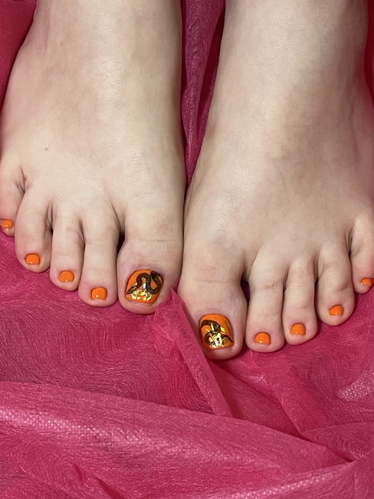

Мої роботи


Привіт, мене звати Людмила, і я — майстер манікюру з досвідом понад 10 років.
Я обожнюю свою роботу, бо вона дозволяє творити красу та дарувати жінкам радість. Для мене манікюр — це не просто послуга, а цілий ритуал турботи про себе.
За ці роки я вдосконалила свої навички та виробила свій стиль — акуратний, ніжний і завжди індивідуальний. Працюю з різними техніками: класичний та апаратний манікюр, гель-лак, дизайн. Постійно слідкую за трендами та навчаюсь новому, аби дарувати клієнткам лише найкраще.
Найбільше ціную довіру людей та їхні щасливі очі після процедури. Адже красиві нігті — це не лише деталь образу, а й джерело впевненості.
Рада кожній, хто обирає мене. Дякую, що довіряєте свої руки моїм рукам!
Обов'язково записуйтесь!
Манікюр — це не лише про красу, а й про турботу. Доглянуті руки створюють приємне враження та підкреслюють стиль людини. Сучасний манікюр буває різним: класичний, апаратний, з покриттям гель-лаком чи з яскравим дизайном.
Окрім естетики, манікюр допомагає зберігати здоров’я нігтів — запобігає ламкості та сухості шкіри. Це також чудовий спосіб самовираження: через колір, форму чи малюнок на нігтях можна передати настрій або навіть пору року.
Манікюр — це маленька деталь, що додає впевненості та гарного настрою.
| Міф | Правда | |
|---|---|---|
| 1 | Манікюр псує нігті | Якісний манікюр зміцнює нігті, якщо правильно знімати покриття й доглядати за руками. |
| 2 | Гель-лак не дає нігтям дихати | Нігті — це рогова тканина, яка не потребує "дихання". Важливий правильний догляд між покриттями |
| 3 | Чим частіше робити манікюр, тим тонші стають нігті | Тоншання нігтів — результат неправильного зняття покриття або надмірного спилювання, а не частота процедур |
| 4 | Манікюр — це тільки для жінок. | Чоловічий манікюр — це норма гігієни та охайного вигляду. |
| 5 | Чим частіше робити манікюр, тим гірше для нігтів. | Регулярний манікюр навпаки покращує стан нігтів і кутикули, якщо використовуються якісні матеріали. |
| 6 | Чоловікам манікюр не потрібен. | Все більше чоловіків регулярно доглядають за руками — це ознака охайності, а не жіночності. |
Педикюр — це не лише про красиві нігті на ногах, а й про здоров’я та комфорт. Регулярна процедура допомагає позбутися натоптишів, мозолів, сухості шкіри та врослих нігтів.
Сучасні види педикюру — класичний, апаратний, SPA чи комбінований — дозволяють підібрати догляд під будь-які потреби. Крім гігієни, педикюр дарує відчуття легкості та доглянутості, а також впевненість у собі — особливо в теплу пору року.
Не варто чекати літа, щоб записатися на педикюр. Доглянуті стопи — це турбота про себе в будь-який сезон.

Наші ноги щодня витримують велике навантаження, тому вони заслуговують на регулярний догляд. Педикюр допомагає зберегти здоров’я шкіри стоп, запобігти тріщинам, сухості й мозолям.
Крім гігієни, це ще й приємний ритуал турботи про себе. Чисті нігті, м’яка шкіра й відчуття свіжості — те, що потрібно не лише влітку, а цілий рік.
Доглянуті ніжки дарують легкість, впевненість і гарний настрій щодня — незалежно від сезону. Я завжди дбаю про стерильність, комфорт клієнта та індивідуальний підхід.
Пропоную класичний, апаратний або комбінований педикюр — залежно від потреб шкіри та нігтів. У роботі використовую професійні засоби, які забезпечують результат і приємні відчуття.
Педикюр — це твій момент відпочинку і турботи про себе.
Стерилізація — це відповідальний крок, який допомагає зменшити кількість безпритульних тварин і покращити життя вашого улюбленця. Щороку тисячі небажаних кошенят і цуценят опиняються на вулицях або в переповнених притулках. Цього можна уникнути, якщо вчасно стерилізувати тварину.
Процедура також захищає від серйозних хвороб, таких як рак статевих органів або запалення матки. Стерилізовані тварини зазвичай живуть довше, менш агресивні, не тікають з дому і не мітять територію.
Стерилізація — це безпечний і простий спосіб подбати про здоров’я вашого улюбленця та допомогти вирішити проблему безпритульності.